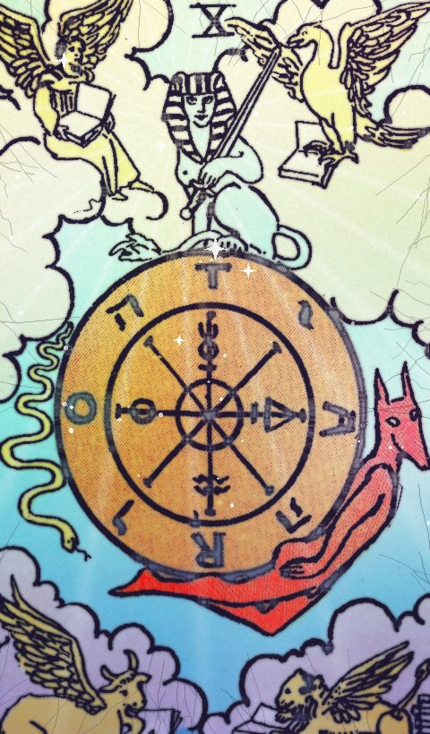

| Número | X |
|---|---|
| Elemento / astro | Júpiter |
La Rueda de la Fortuna en el tarot: significado, amor, trabajo y consejo
| Palabras clave · Al derecho | ciclos, cambio, destino, suerte |
|---|---|
| Palabras clave · Invertida | mala racha, resistencia al cambio, estancamiento |
Al derecho
La rueda gira. Un cambio que no depende del todo de ti y que suele traer oportunidades: aprovecha la subida.
Invertida
Una racha a la contra. Todo pasa; aprende del ciclo en lugar de pelearte con él.
En el amor
Encuentros del destino o un giro inesperado en la relación.
En el trabajo y el dinero
Cambios de circunstancias, oportunidades que llegan de golpe.
Consejo
Suéltate y adáptate al giro.
¿Sí o no?
Es una carta de «sí». Si sale invertida, la respuesta se suaviza a «quizás».
En pasado, presente y futuro
En el pasado: Algo de ciclos ya ha marcado el camino. Mira qué aprendiste de ello.
En el presente: Ahora mismo toca ciclos y cambio. Es la energía del momento.
En el futuro: Se acerca una etapa de suerte. Prepárate para recibirla.
Preguntas frecuentes
¿Qué significa La Rueda de la Fortuna en el tarot?
La rueda gira. Un cambio que no depende del todo de ti y que suele traer oportunidades: aprovecha la subida. Suéltate y adáptate al giro.
¿La Rueda de la Fortuna es sí o no?
Es una carta de «sí». Si sale invertida, la respuesta se suaviza a «quizás».
¿Qué significa La Rueda de la Fortuna invertida?
Una racha a la contra. Todo pasa; aprende del ciclo en lugar de pelearte con él.